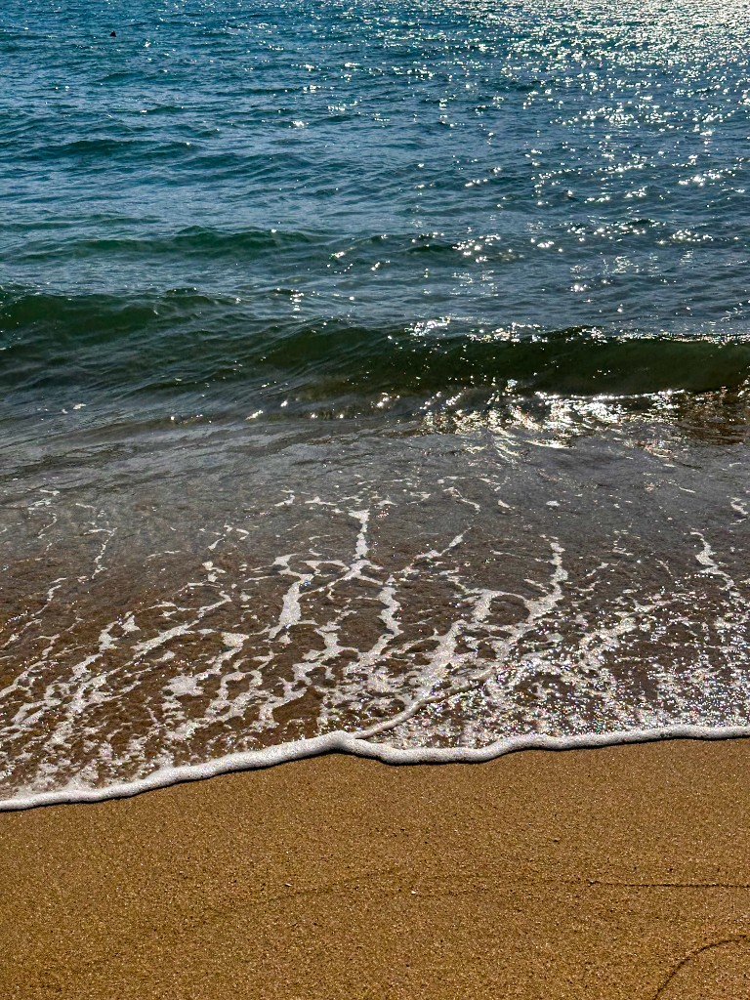
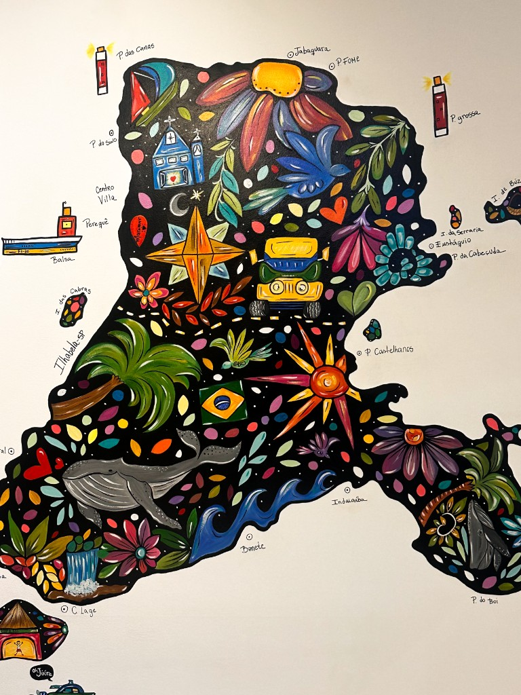
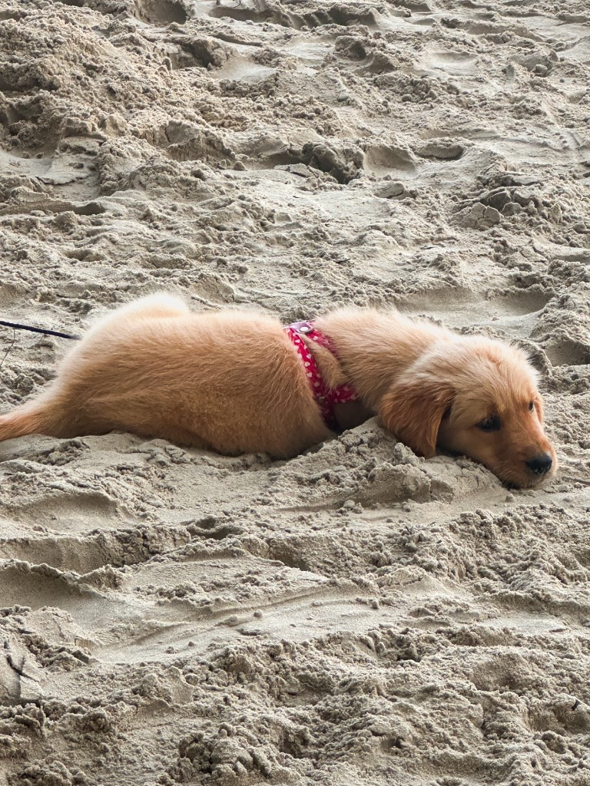
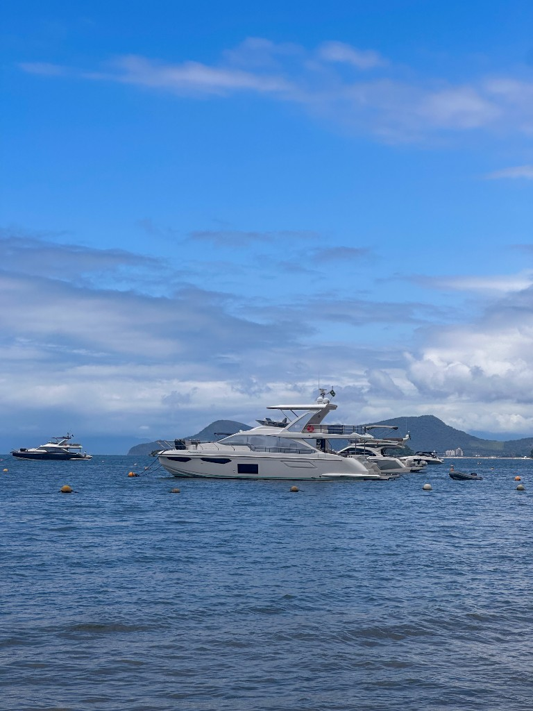
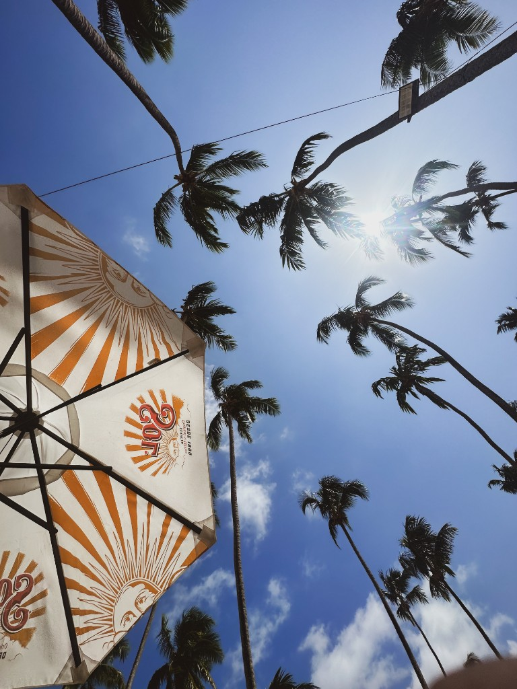
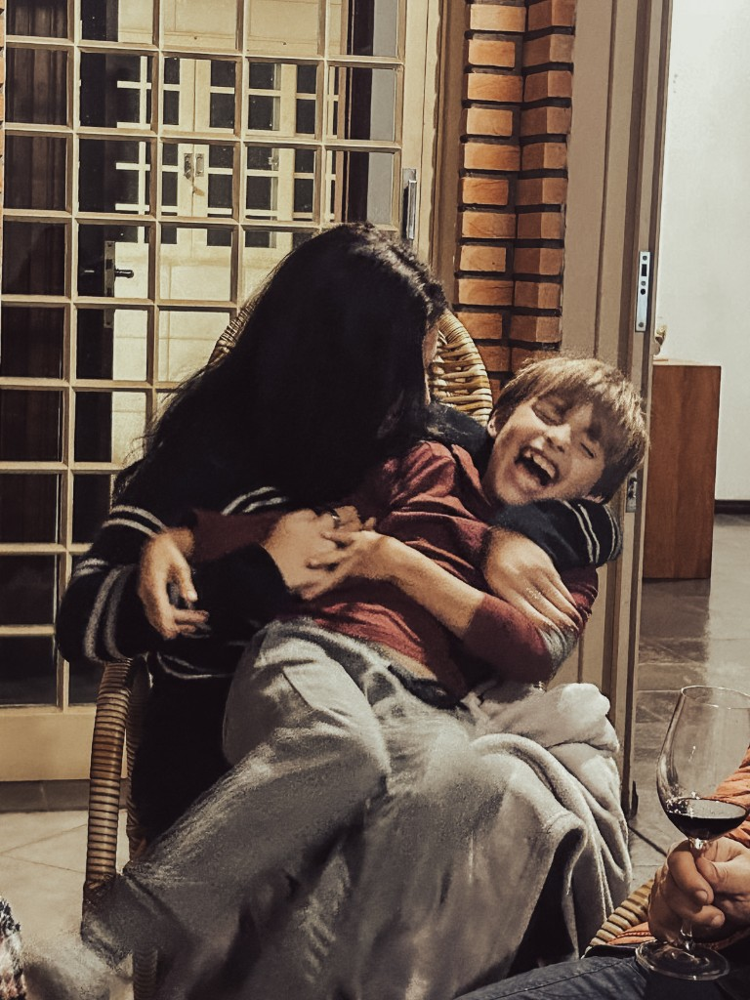
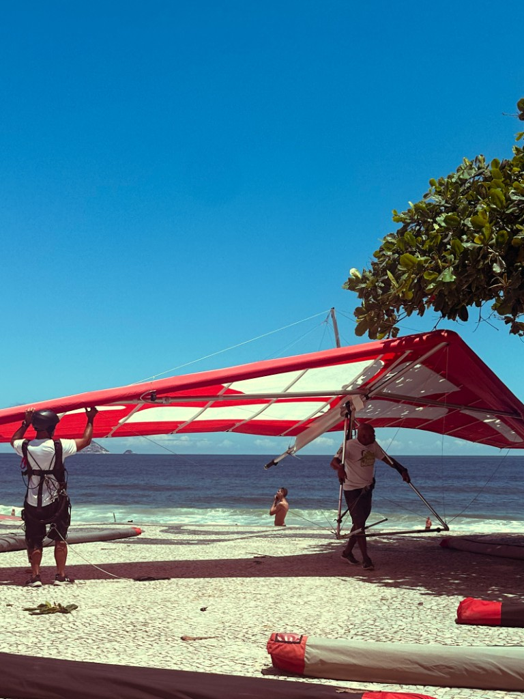
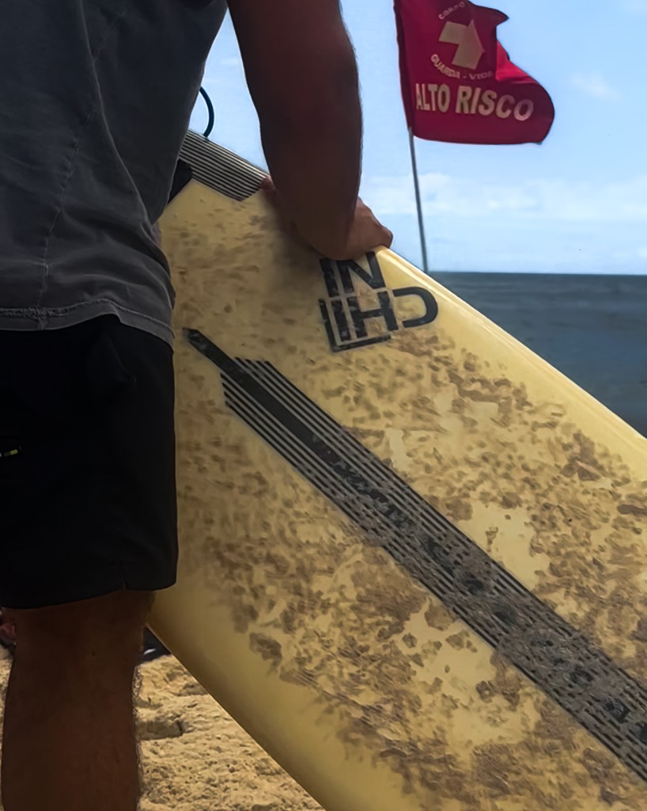
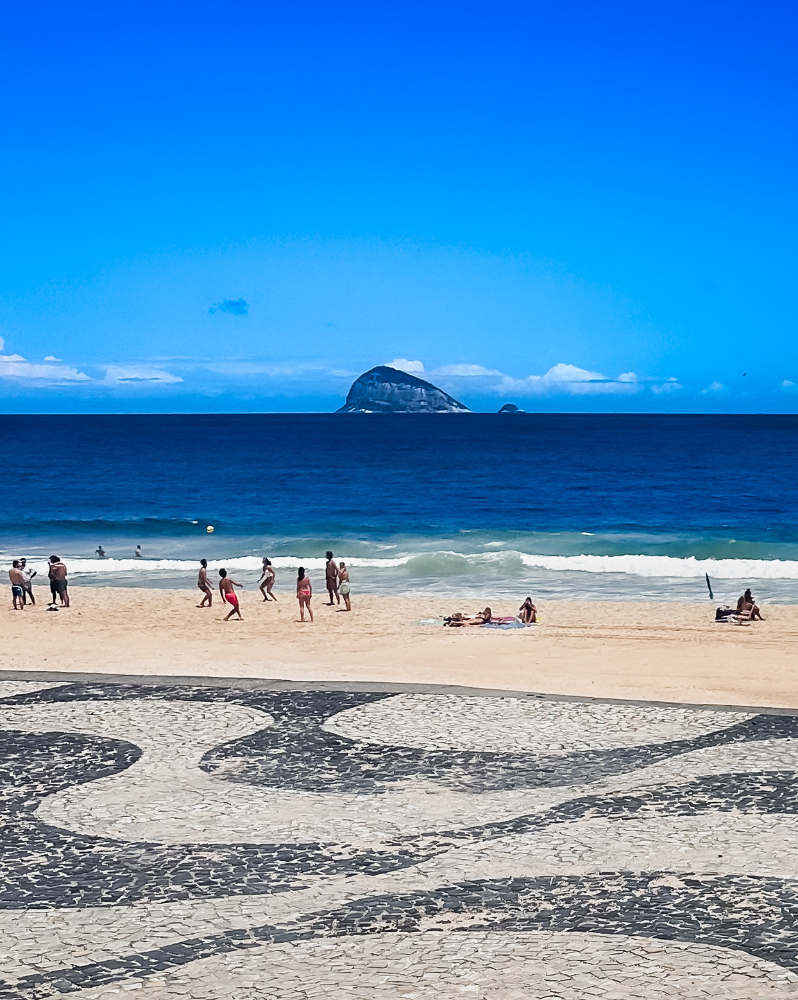

Where I’m from: São Paulo through my lens - city, people, and the details that make me pay attention. These frames are part of how I think as a researcher and designer. I’m happy to share more in conversation.

Gentle ocean waves rolling onto sandy shore.

Colorful illustrated map in the shape of Alaska.Decorative glass bottles in orange and green tones.

Small puppy lying asleep on sandy beach.

Yacht anchored in calm blue ocean with mountains in background.

Palm trees swaying against a bright blue sky.

Adult hugging and laughing with a young child indoors.

Red hang glider on a sandy beach with ocean behind.

Person holding a surfboard on a beach.Person holding a small dog under red lighting.Close-up portrait of a woman looking upward in dramatic light.

Wide sandy beach with ocean waves and distant island.